Back Door Glass Installation |
| 1. Clean Back Door Glass |
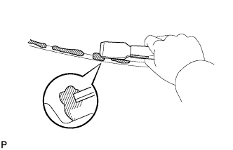 |
Using a scraper or equivalent, scrape off any adhesive and double-sided tape remaining on the back door glass. (When reusing back door glass)
Clean the outer circumference of the back door glass with white gasoline.
| 2. Install Back Window Glass Spacer NO.1 |
Using the specified primer, apply it to the installation area of back door window glass spacer, NO.1 on the back door glass.
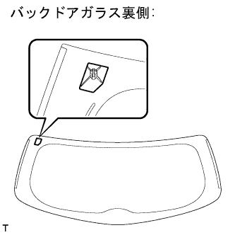 |
Install a new back door window glass spacer, NO.1 to the back door glass at the position shown in the illustration.
| 3. Install Back Window Glass Spacer NO.2 |
Using the specified primer, apply it to the installation area of back window glass spacer No.2 on the back door glass.
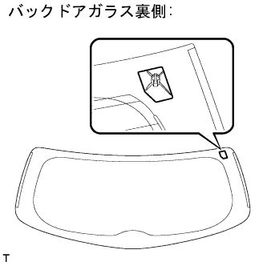 |
Install a new back door glass spacer No.2 to the back door glass at the position shown in the illustration.
| 4. Install Back Door Glass Spacer |
Using the specified primer, apply it to the back door glass spacer installation area on the back door glass.
Install 4 new back door glass spacers.
| 5. Install Back Window Moulding Outside |
Using the specified primer, apply it to the back window moulding outside installation area on the back door glass.
Install the back window moulding outside to the back door glass at the position shown in the illustration.
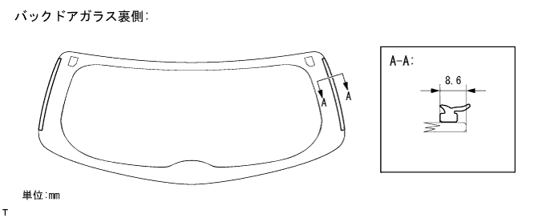
| 6. Install Back Window Moulding LWR |
Using the specified primer, apply it to the back window moulding LWR installation area on the back door glass.
Install the back window moulding LWR to the back door glass at the position shown in the illustration.
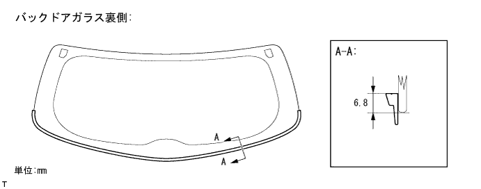
| 7. Install Back Door Glass |
 |
Clean Body Installation Surface
If the adhesive on the vehicle has significant unevenness, smooth it with a knife.
Clean the body installation surface with white gasoline.
Work before Installing Back Door Glass
Attach suction cups to the back door glass.
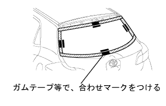 |
Temporarily place the back door glass on the body and set it in a position where the widths at the top and sides of the back door glass are uniform (the clearance between the body and the edge of the back door glass is uniform).
Apply packing tape or equivalent to the back door glass and body panel, and make matchmarks with a pen for installation. (When using new back door glass)
Remove the back door glass.
Using the specified primer, apply it to the areas where the body surface of the vehicle is exposed (where no adhesive remains).
Using the specified primer, apply it to the back door glass at the positions shown in the illustration.
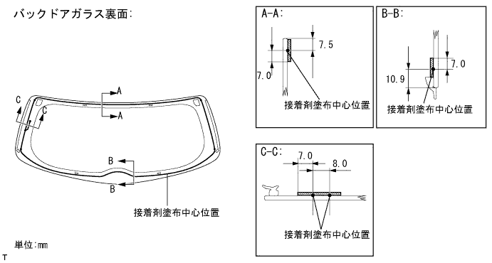
Cut off the tip of the adhesive nozzle as shown in the illustration.
Load the adhesive into a sealant gun.
Apply the adhesive in a bead as shown in the illustration.
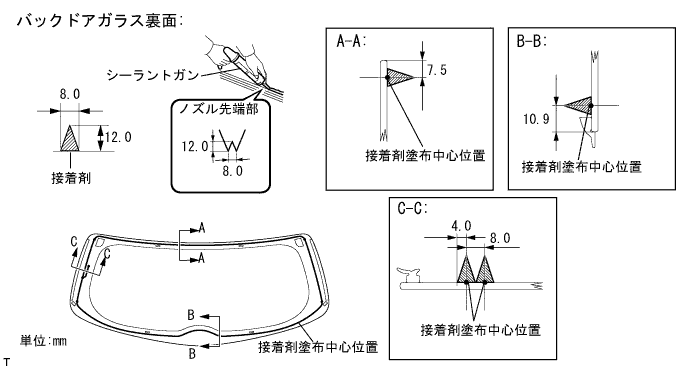
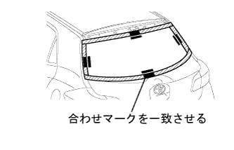 |
Install Back Door Glass
Using the suction cups, align the matchmarks and install the glass.
Lightly press the front surface of the back door glass to ensure that it is fully sealed.
Using a spatula, correct any excess or insufficient adhesive.
Remove any excess adhesive before it hardens.
Using protective tape or equivalent, hold the back door glass in place until the adhesive hardens.
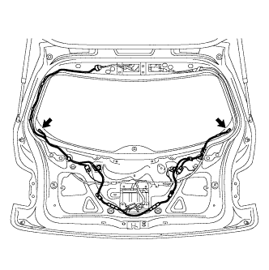 |
Connect the 2 connectors.
| 8. Inspect for Water Leaks |
After the adhesive has hardened, pour water over the vehicle from the outside and check that there is no water leaking into the cabin.
If there is a water leak, allow it to dry and then fill with Three Cement Black.
Remove the protective tape and packing tape that were applied.
| 9. Install Rear Spoiler Assembly |
 |
Engage the clips and install the rear spoiler assembly.
Tighten the rear spoiler assembly with the 4 nuts.
Connect the connectors.
Install the 2 plug hole covers.
| 10. Install Rear Wiper Motor Grommet |
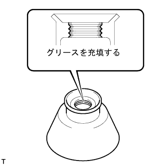 |
Apply Denso No. 50 grease to the entire circumference of the lip of the rear wiper motor grommet.
 |
Install the rear wiper motor grommet.
| 11. Install Rear Wiper Motor Assembly |
 |
Insert the shaft of the rear wiper motor assembly into the grommet.
Install the rear wiper motor assembly with the 3 bolts.
Connect the connector.
| 12. Install Rear Wiper Arm & Blade Assembly |
 |
Stop the rear wiper motor assembly at the automatic stop position.
Using a round file or equivalent, clean the wiper arm serrations. (When reassembling)
Using a wire brush, clean the wiper pivot serrations.
 |
Install the rear wiper arm & blade assembly with the rear wiper arm nut so that it is in the position shown in the illustration.
| 13. Install Rear Wiper Arm Head Cap |
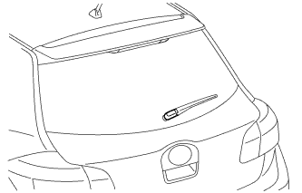 |
Install the rear wiper arm head cap.
Operate the rear wiper while applying water or washer fluid to the glass, and check the wiping condition of the blade and that it does not interfere with the body.
| 14. Install Back Door Trim Panel Assembly |
 |
Engage the 11 clips to install the back door trim panel assembly.
Install clip (A).
| 15. Install Back Door Inside Handle |
 |
Engage the 4 claws to install the back door inside handle.
| 16. Install Back Door Side Garnish LH |
 |
Engage the clips and claws to install the back door side garnish LH.
 |
Align the guide position, and engage the 2 claws to install the package tray trim garnish hook.
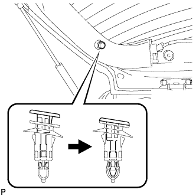 |
Engage the pin of the package tray trim garnish hook.
| 17. Install Back Door Side Garnish RH |
| 18. Install Back Door Trim Panel Assembly Upper |
 |
Engage the 4 clips and 4 claws to install the back door trim panel assembly upper.